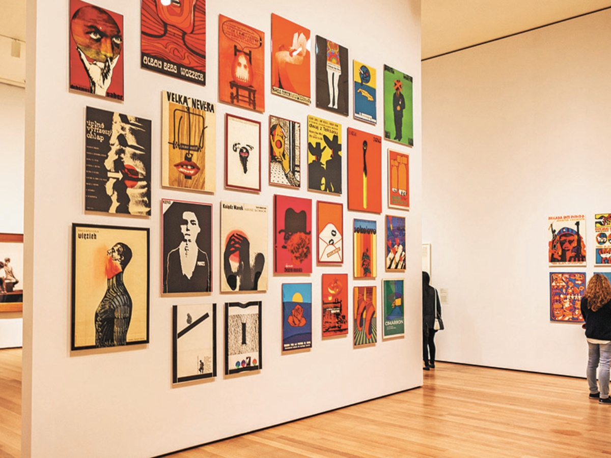
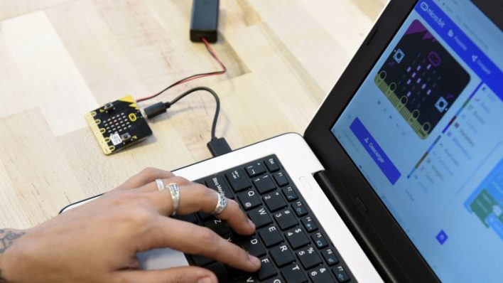
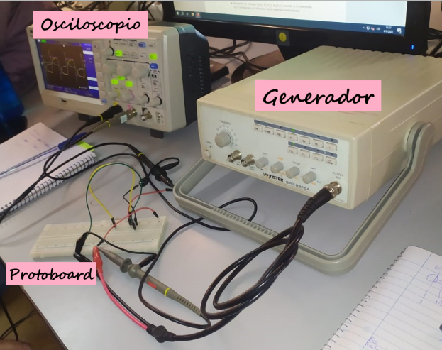
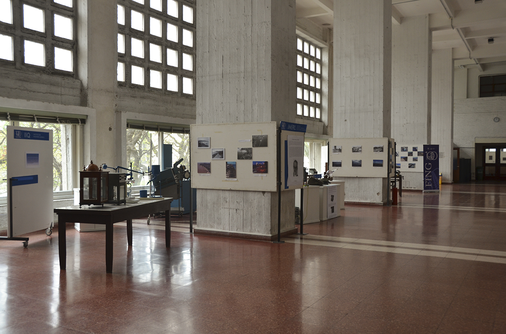
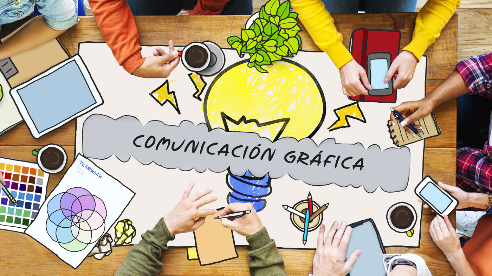

Proyecto 1
Implementación de una Galería de Arte con Gestión de Visitas Diarias

- Descripción del proyecto
-
Implementé un sistema de gestión de visitas diarias para una galería de arte,
que incluía la administración de grupos de visitantes, registro histórico de visitas y
análisis de preferencias de los visitantes. Este sistema fue construido utilizando múltiples
módulos interconectados, cada uno encargado de diferentes aspectos del manejo de las visitas
y los datos de los visitantes.
- Habilidades y Herramientas Utilizadas:
-
- Lenguaje de Programación: C/C++
- Estructuras de Datos: Heap binario (montículo binario), Tabla de Dispersión Abierta
- Algoritmos: Inserción y eliminación en heaps, manejo de tablas hash, filtrado ascendente y descendente
- Conceptos: TAD (Tipo Abstracto de Datos), gestión dinámica de memoria, manipulación de punteros
- Desarrollo de Software: Implementación de módulos y cumplimiento de especificaciones de tiempo de ejecución
- Detalles técnicos
Módulo Visita Día(TAD Cola de Prioridad):
-
- Heap Binario: Implementé un heap binario utilizando arrays para gestionar la prioridad de los grupos de
visitantes, con operaciones de inserción y eliminación eficientes.
- Funciones Clave: Crear visitas diarias, encolar grupos, verificar pertenencia, obtener fecha, invertir
prioridad, y desencolar grupos.
Módulo Hash Visita Día(TAD Tabla)
-
- Tabla de Dispersión Abierta: Implementé una tabla hash para almacenar históricamente las visitas diarias,
permitiendo inserciones y búsquedas eficientes.
- Funciones Clave: Crear y liberar tabla hash, agregar visitas diarias, imprimir visitas diarias en orden.
Módulo Visitante
- Piezas Favoritas: Modifiqué el módulo para incluir las piezas favoritas de cada visitante, permitiendo el análisis de
preferencias para mejorar la satisfacción de las visitas
- Resultados
-
- El sistema permite gestionar eficientemente las visitas diarias a la galería, priorizando a los grupos según
su edad promedio y almacenando registros históricos para análisis futuros.
- Se lograron los objetivos de tiempo de ejecución especificados, demostrando un manejo avanzado de estructuras de datos y algoritmos
Puedes ver el código del proyecto si lo deseas, haz click en el enlace para descargar el archivo comprimido:
Proyecto 2
Participación de Talleres Micro:bit

- Descripción del Proyecto
- En colaboración con el Centro Ceibal, participé en un emocionante proyecto orientado a la distribución y utilización de Placas Micro:bit
en centros educativos de primaria y secundaria. El objetivo de este proyecto es enseñar a los estudiantes nociones básicas de robótica, electrónica y programación de manera autónoma y lúdica. Las placas micro:bit
, basadas en un microcontrolador, cuentan con LEDs, botones, acelerómetro, brújula, Bluetooth y otros sensores, y se pueden programar fácilmente con lenguajes como "scratch" y Python.
- Objetivos del Proyecto
-
- Enseñanza Práctica: Acercar a estudiantes y docentes al uso de micro:bit mediante talleres prácticos.
- Desarrollo de Habilidades: Fomentar el aprendizaje de robótica, electrónica y programación en un entorno educativo.
- Implementación de Proyectos: Guiar a los estudiantes en el desarrollo de proyectos creativos utilizando micro:bit
- Evaluación y Mejora: Participar en la evaluación de proyectos y eventos organizados por el Centro Ceibal.
- Actividades Realizadas
-
- Dictado de Talleres: Llevé a cabo talleres para docentes y estudiantes, guiando el desarrollo de proyectos basados en micro:bit en diversos centros educativos.
- Desarrollo de Proyectos: Trabajé en el desarrollo de proyectos de robótica utilizando micro:bit , integrando conocimientos de programación y electrónica.
- Participación en Eventos: Colaboré en el 4to seminario Aprender Haciendo, organizado por el Centro Ceibal, promoviendo el uso de micro:bit
y compartiendo experiencias con otros participantes.
- Evaluación de Proyectos: Contribuí a la evaluación de proyectos, proporcionando feedback y sugerencias para mejorar las iniciativas de los estudiantes.
- Reflexión Personal
-
Este proyecto ha sido una experiencia enriquecedora que no solo me ha permitido aplicar mis conocimientos en un contexto práctico, sino que también me ha brindado
la satisfacción de ver cómo estudiantes y docentes se entusiasman y aprenden nuevas habilidades. La combinación de enseñanza y desarrollo de proyectos en un entorno
colaborativo y creativo ha sido una experiencia sumamente gratificante.
Proyecto 3
Laboratorio de Física Experimental II

- Descripción del Curso
- En el curso de Laboratorio de Física Experimental II, me acerqué de manera profunda a la actividad
experimental en los campos del electromagnetismo y la óptica. A través de diversas experiencias
prácticas de laboratorio, utilicé instrumental avanzado para la medición de magnitudes eléctricas y
magnéticas, profundizando en el análisis de datos experimentales, el cálculo de incertidumbres y la
comunicación efectiva de resultados.
- Objetivos de Aprendizaje
-
Durante el curso logré:
- Implementación experimental: Seguí directrices específicas para implementar montajes experimentales eficientes y precisos.
- Metodología de medición: Apliqué metodologías rigurosas para medir magnitudes físicas, utilizando generadores de voltaje y corriente AC/DC, y osciloscopios.
- Herramientas de análisis: Utilicé herramientas avanzadas de análisis de datos experimentales, especialmente estadísticas y ajustes por mínimos cuadrados, interpretando los resultados obtenidos.
- Instrumentación: Reconocí y utilicé diversos instrumentos de medición, comprendiendo sus características de funcionamiento.
- Representación gráfica: Realicé y analicé gráficos de medidas experimentales y modelos teóricos utilizando SciDAVis para su representación gráfica y conceptual.
- Interpretación de resultados: Analicé resultados experimentales y los comparé con modelos físicos propuestos, obteniendo conclusiones sobre el diseño y los resultados de las experiencias.
- Comunicación efectiva: Elaboré informes detallados en formato preestablecido y presenté resultados de manera escrita y oral a lo largo del curso.
- Herramientas Tecnologicas Utilizadas
-
- SciDAVis: Para la representación gráfica interactiva y análisis de datos.
- Overleaf: Se utilizó éste editor de LaTeX para la elaboración de los informes de manera colaborativa.
- Temario del curso
-
- Medidas eléctricas sencillas
- Simulaciones de circuitos eléctricos
- Uso del osciloscopio
- Campos magnéticos
- Óptica
- Transferencia y tratamiento de señales
- Inducción electromagnética
- Dispositivos semiconductores
- Conclusión
- Este curso me proporcionó una experiencia integral en el laboratorio, preparándome para abordar problemas
experimentales con una metodología científica rigurosa y habilidades avanzadas de comunicación y análisis de
datos.
- Listado de Informes Científicos Realizados
-
Click en el enlace para Descargar PDF
Proyecto 4
Relevamiento y Representación Técnica del Piso 1 de la Facultad

- Descripción del Proyecto
- En este proyecto, realicé un relevamiento del 1er Piso de la Facultad de Ingeniería-UdelaR, como
consigna del Taller de Representación y Comunicación Gráfica, colaborando con un equipo de dos
integrantes adicionales. Mi responsabilidad específica fue la elaboración del corte BB, mientras
mis compañeros se encargaron de los cortes AA y de la Planta. El objetivo final fue construir
la estructura 3D utilizando los cortes de referencia.

- Detalles del Trabajo Realizado
Dibujo Croquizado y Técnico de Precisión(CAD)
-
- Realización de bocetos iniciales del corte BB.
- Uso de AutoCAD para la creación de dibujos técnicos precisos, capturando todos los
detalles necesarios para interpretar, reformar o diseñar la construcción y su equipamiento.
Criterios y Modalidades de Acotado
-
- Aplicación de criterios específicos para acotar los planos en diferentes etapas, incluyendo relevamiento, diseño y construcción.
- Ajustes de precisión para asegurar que los datos capturados fueran exactos y útiles para posteriores fases del proyecto.
Renderización y Configuración para Impresión:
-
- Integración de los cortes AA, BB y la Planta para generar una representación tridimensional de la estructura en AutoCAD.
- Renderización de la estructura 3D para proporcionar una visualización clara y detallada del primer piso.
- Configuración de los planos para impresión, asegurando la correcta escala de los objetos y siguiendo pautas específicas de
edición de estilos de puntas, presentaciones y escalas de trazado.
- Herramientas y Tecnologías utilizadas
-
- AutoCAD: Para la creación de dibujos técnicos precisos y la renderización de la estructura 3D.
- Técnicas de Croquizado: Para la elaboración de bocetos iniciales y la captura de datos in situ.
- Habilidades y Competencias desarrolladas
-
- Introducción en las técnicas de croquizado técnico a mano alzado.
- Introducción en la interpretación y criterios de normas de representación de las diferentes ingenierías.
- Representación y diseño de ingeniería en relación a su organización espacial en predios, obras , y/o locales industriales.
- Ponerse en contacto con los problemas que aborda la ingeniería (proyectos, construcciones, instalaciones, procesos industriales), incorporando la aplicación de las normas, códigos y simbologías de representación gráfica, promoviendo la utilización de medios informáticos.
- Práctica y desarrollo de técnicas de exposición (oral, escrita, gráfica) para comunicar y promover proyectos de ingeniería.
- Desarrollo de la capacidad para seleccionar los cortes /vistas /secciones, más apropiados para la representación de piezas, elementos estructurales, de construcción, locales y predios.
- Resultados del Proyecto
- El proyecto resultó en la creación de planos técnicos detallados y precisos del primer piso de la
facultad, con todos los cortes necesarios (AA, BB y Planta) integrados en una representación 3D.
Estos planos son fundamentales para futuras interpretaciones, reformas o diseños de la estructura,
proporcionando una base sólida para cualquier trabajo arquitectónico o de ingeniería relacionado
con el edificio.
- Conclusión
-
Este proyecto me permitió aplicar y ampliar mis habilidades en relevamiento arquitectónico,
dibujo técnico y uso de AutoCAD, trabajando en equipo para lograr una representación precisa y
útil del primer piso de la facultad.